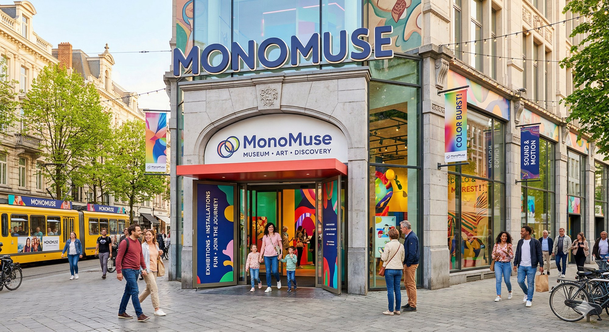

About MonoMuse
MonoMuse was founded in 2018 in Pittsburgh, Pennsylvania, with a mission to make technology-driven art accessible to everyone. The museum brings together artists, engineers, and designers to create experiences that challenge how we think about creativity in the digital age.

Who We Serve
MonoMuse is open to everyone — students, families, artists, and anyone curious about how technology and art connect.
Milestones
- 2018 — MonoMuse opens its doors to the public in Pittsburgh, Pennsylvania
- 2019 — Launches inaugural exhibition "Digital Horizons: Art Beyond the Screen"
- 2020 — Introduces virtual exhibition tours, reaching over 50,000 online visitors
- 2021 — Partners with Carnegie Mellon University for the Interactive Arts Residency
- 2022 — Surpasses 100,000 in-person visitors; opens a dedicated education wing
- 2023 — Receives the National Arts Innovation Award for community engagement
- 2024 — Debuts the immersive "Synth & Soul" installation by artist collective NOVA
- 2025 — Launches website redesign initiative to improve visitor experience and ticket purchasing